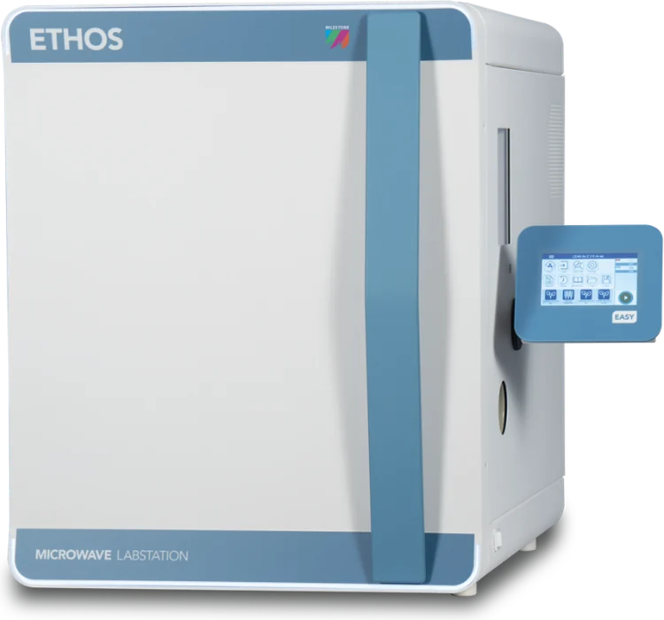

ETHOS Microwave Labstation
ETHOS Microwave Labstation is a microwave digestion system for preparing samples for elemental analysis by ICP-MS, ICP-OES and AAS, designed for high productivity, safety and reproducibility. The system uses the contactless easyTEMP sensor for direct monitoring of sample temperature, while rotors with vent-and-reseal technology ensure safe operation at high temperatures and pressures. Depending on laboratory needs, a 15-vessel rotor with 100 mL vessels is available for demanding matrices and larger sample weights, as well as 24- and 44-vessel rotors for high sample throughput. With additional accessories, the platform can also be used for extraction, evaporation, concentration and other sample preparation procedures.